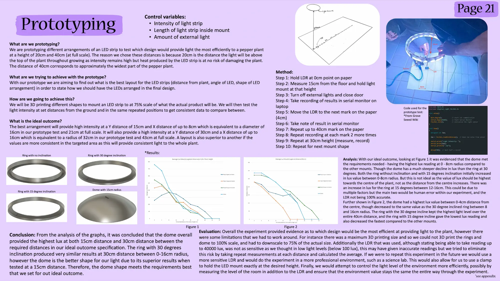
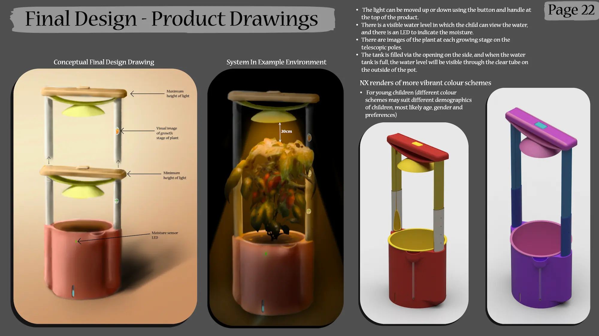
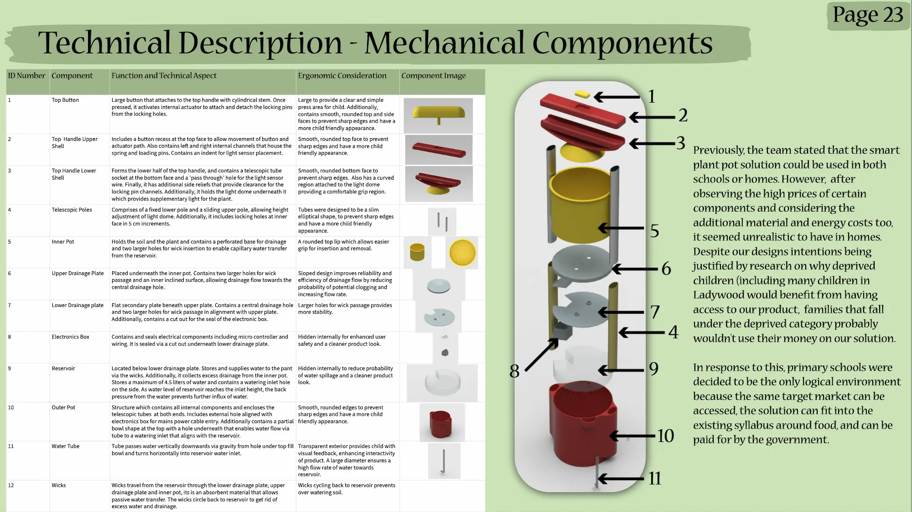
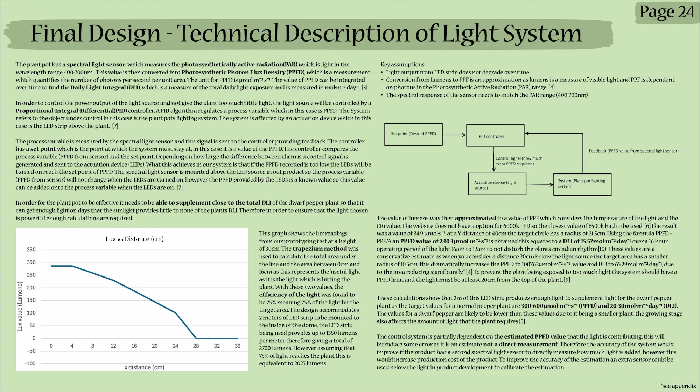

This was a six-person project for an Engineers Without Borders brief about tackling healthy eating in Ladywood, Birmingham. Ladywood is an area with real problems around food insecurity and child poverty. As a group we researched the problem area and consulted the brief to come up with our problem statement: "making a design to encourage healthy eating for children in Ladywood." We then wrote a product design specification — to inform it, we classified our stakeholders and built an empathy map. From there we ideated and used a weighted decision matrix to decide which product to take forward into development. The chosen product was a smart plant pot to help children in school grow dwarf peppers, to interest them in the process of growing vegetables.
One part of the project I took a lot of ownership over was the light supplementation system. This began with finding a shape that efficiently delivered light to the plant, in order to reduce energy consumption and wasted light. To test this, we 3D printed four different shapes — a flat ring, rings at 15° and 30° inclines, and a dome — and attached an LED strip to each. We then recorded the lux value produced by each shape at varying x and y distances from the LDR, repeating each measurement to improve accuracy. The dome produced the greatest light intensity within the area the plant would occupy, so this is the shape we carried into the final design. After that I wrote a technical description of the light system, covering how the Daily Light Integral would be calculated and how a PID controller would be implemented to ensure the plant got the right amount of light every day — shown below. This included key considerations such as only supplying light during set hours, to avoid disturbing the plant's circadian rhythm.
Finally, another key contribution I made was the CAD design — I modelled almost all of it, minus one or two components. The assembly consists of 11 components and isn't in a manufacturable state, but it shows the basic internal workings of the product. All parts and the assembly were built in Siemens NX.



